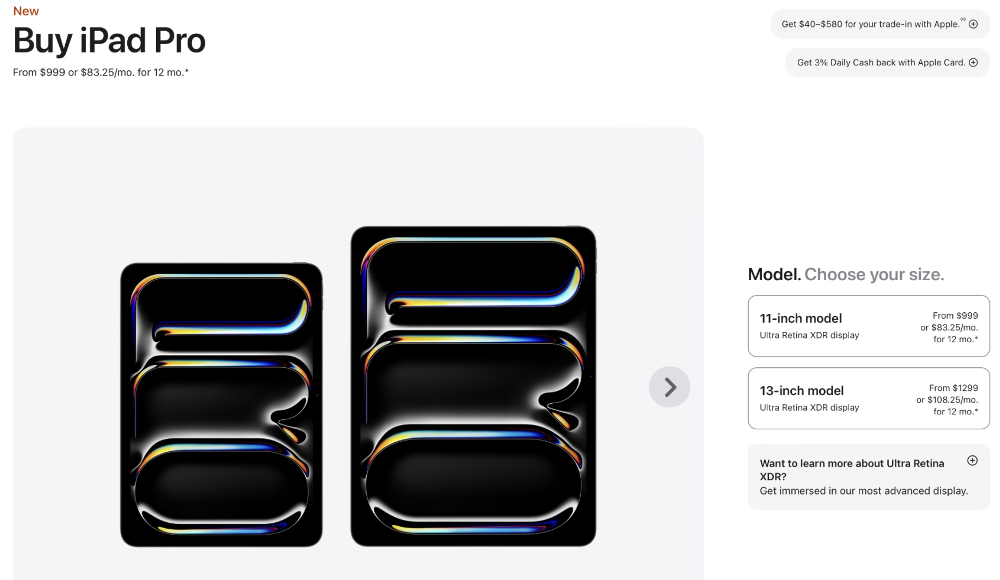

Judd Smith
Table of Contents
1 – Systems
Featured Image
An analysis of a complex world system.
What is the system?
I’m interested in one-to-one synchronous connections facilitated by action-based embodied computation systems — i.e. mobile computing devices. The ecosystem of mobile communication technologies we use in the present day displace and prioritize our attention in the asynchronous and placeless landscape of digital space, through a number of affordances and rulesets that create negative reinforcement loops to keep our attention and cognition within the same digital space. The purpose of our talk and communication in life is to connect two known or unknown persons together through the ignition of action into a social situation that then turns into an encounter. If the core function of mobile technology is to communicate with other people, the current affordances and rulesets within our devices have lost sight of this vision through the introduction of a number of unfocused (yet helpful) affordances and ruleset that create many superfluous pathways for our communication to fail and get lost in the act of passive and heavy strategy-focused engagements.

2 – Systems
On Authorship
I am interested in authoring systems that re-center a user’s sociality in the physical world through action-based hardware. The screen-based “remote-for-everything” affordance and configuration of mobile computing and communication has forgone the core purpose of connecting with information and people for affording us the ability to observe our interests from whatever corner of the algorithm our usage has delivered us to. If we think of the mobile computation devices on our possession as a compass that focuses and points our attention to whatever idea and person we aim it at in digital space, we must prioritize the system and conditions that human communication thrives in: Social situations that can lead to encounters where talk happens. A social situation as defined by Erving Goffman essentially is an environment of mutual monitoring potential that can become active the second that two or more people have the possibility of interacting. An Encounter ensues the moment two or more people engage with each other. The wayfinding of computation we possess on our persons should prioritize this order of social interaction in localities by not disproportionately dispossessing this ability into a placeless digital space (or application) that is defined by the employment of strategy (asynchronous talk) to facilitate connection to places and ideas. Technology must allow for the ability to be interrupted in the here and now and participate in locality over navigating life where an algorithm wishes to displace you.
Hardware and software systems like the Apple Watch in conjunction with it’s additional sensors which afford vital tracking of the user empower users and other interoperable software systems and spaces like Strava and MyFitnessPal to drive platform-specific community engagement and storytelling solely through active usage of their additional sensors to generate “content” and data for sharing with your community.
Similarly, the reduction of interaction affordances in conjunction with the reading of motor sensors in vehicles with CarPlay afford the focused activity of “connected driving” experiences. Motion sensors in external and interoperable accessories (in this case a vehicle) focus the usage of the computation systems / cognitions we carry on our persons everyday to afford the focused and safe operation of a vehicle from point A to point B.